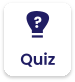

Learn about the four basic types of rests in music: whole rest, half rest, quarter rest, and eighth rest.
Learn how to tell the difference between rests by their appearance and remember them with helpful tricks.
Question 01 of 02
Fill in the blank with the correct answer:
"A ___ rest is worth four beats."
Game Loading...
Tap or click to identify rests.
Match each rest symbol with its correct name and beat value.
Practice identifying different rest symbols and their beat values in this interactive exercise.
Use keyboard arrows to navigate. Press Enter or Space to select.
